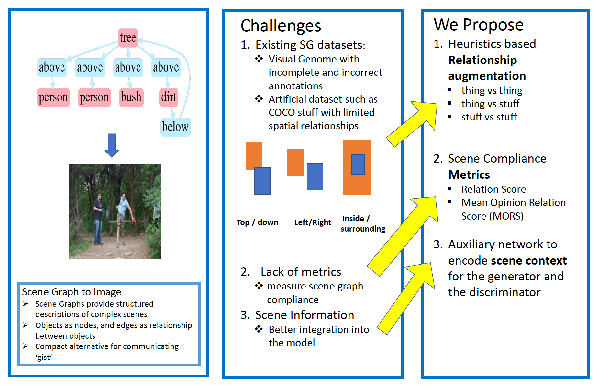

Improving Image Generation from Scene Graphs

Generating realistic images from scene graphs requires neural networks to be able to reason about object relationships and compositionality.
Learning a sufficiently rich representation to facilitate this reasoning is challenging due to dataset limitations.
Synthetic scene graphs from COCO only have basic geometric relationships, and Visual Genome scene graphs are replete
with missing relations or mislabeled nodes. Existing scene graph to image models have two stages: (1) a scene composition
stage, and an (2) image generation stage. In this paper, we propose two methods to improve the intermediate representation
of these stages. First, we use visual heuristics to augment relationships between pairs of objects.
Second, we introduce a graph convolution-based network to generate a scene graph context representation that enriches the
image generation. These contributions significantly improve the scene composition
(relation score of 59.8% compared to 51.2%) and image generation (74% versus 64% in mean relation opinion score).
Introspection shows that these heuristics are particularly effective in learning differentiated representations for
scenes with multiple instances of the same object category. Obtaining accurate and complete scene graph annotations is
costly, and our use of heuristics and prior structure to enhance intermediate representations allows our model to
compensate for limited or incomplete data.